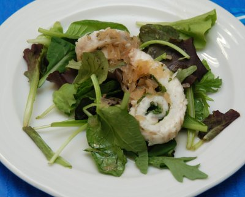

| Zutaten für 4 Personen: | |
| 1 Kl | Butter |
| 1 | Schalotte |
| 2.5 dl | Apfelwein, Cider |
| 2 (je 100g) | Seezungenfilets |
| 1/4 Kl | Salz |
| Pfeffer aus der Mühle | |
| 1 El | Kerbelblättchen (Estragon, Minze...) |
| 100g | Jungsalat |
Schalotte fein hacken.
Butter in einer Pfanne warm werden lassen. Die Schalotten andämpfen, Cider dazugiessen, aufkochen, Hitze reduzieren, auf die Hälfte einkochen.
Fischfilets mit der Hautseite nach oben auslegen, würzen, Kerbel darauf verteilen.
Filets aufrollen mit Zahnstocher fixieren.
Zugedeckt ca. 6 Minuten im Sud ziehen lassen.
Salat auf Teller verteilen.
Filets herausnehmen, halbieren, darauf anrichten, lauwarme Kochflüssigkeit darüber träufeln.
Kochkurs bei Patricia Krummenacher, September 2007
Hat super geschmeckt, RE 24.10.2007
@LINKBACK_TAG@ @WAKELOCK@